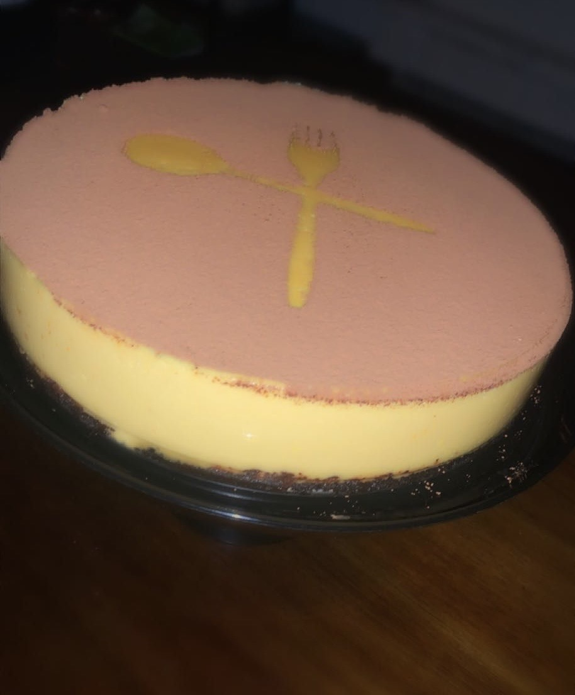
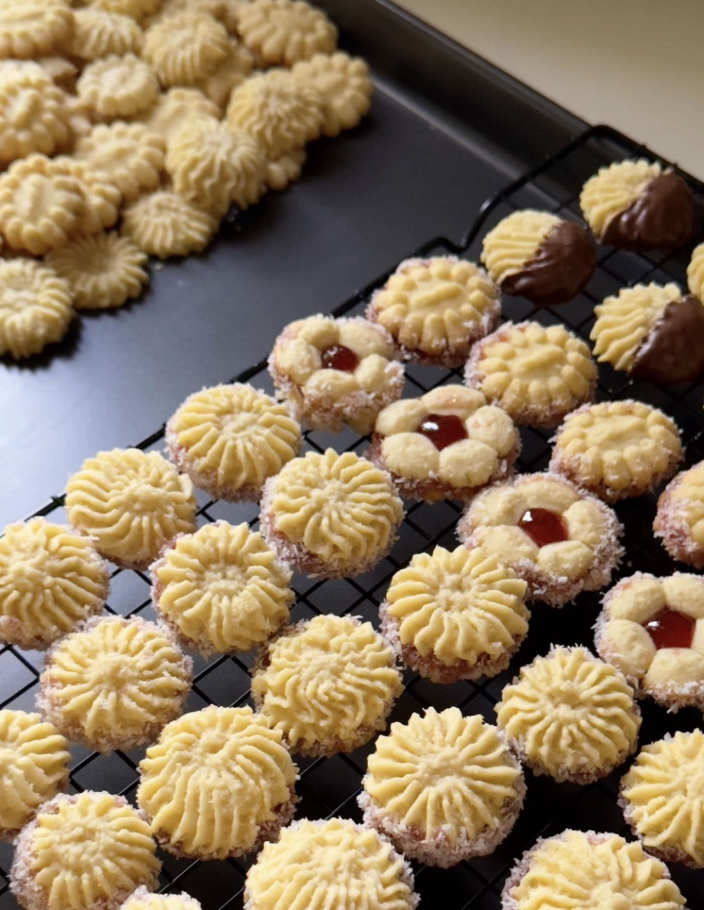

Jory Baking Moments
Where Creativity Comes Alive
Baking is my way of slowing down the world and creating something beautiful with my hands.
Every dessert I make carries emotion, patience, and creativity that makes the process unforgettable.


My Favorite Baking Moments
- Seeing family gather around the kitchen before I even finish decorating the cake.
- Mixing ingredients calmly.
- Kids constantly asking “Is it ready yet?” with zero patience and full excitement.
- Sticky fingers, happy faces, love it.
- Learning to fix a recipe mistake (like overmixing or missing an ingredient)
- Sharing desserts with family and freinds.
- Seeing their reaction and hearing, “This is amazing, it is delicious,” makes all the effort worth it.
Baking Moments + Feelings
| Moment |
What I Do |
Feeling |
| Evening Baking |
Mixing ingredients |
Relaxed |
| Weekend Baking |
Decorating desserts |
Creative & happy |